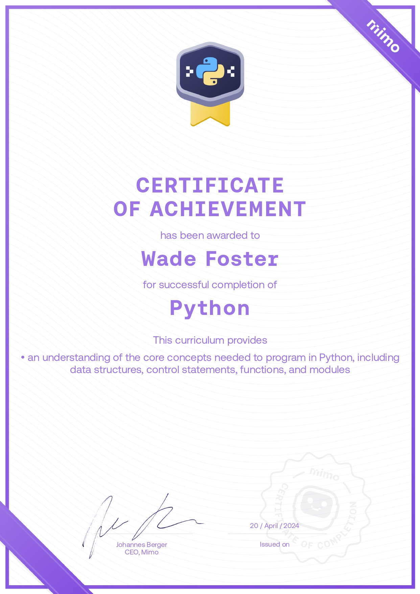
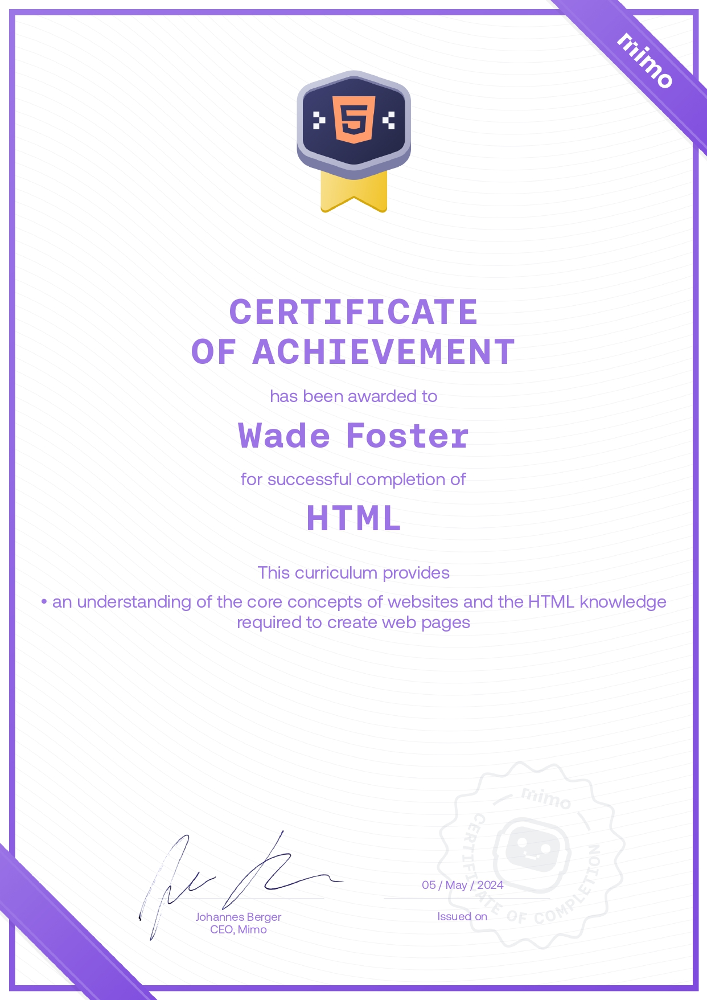
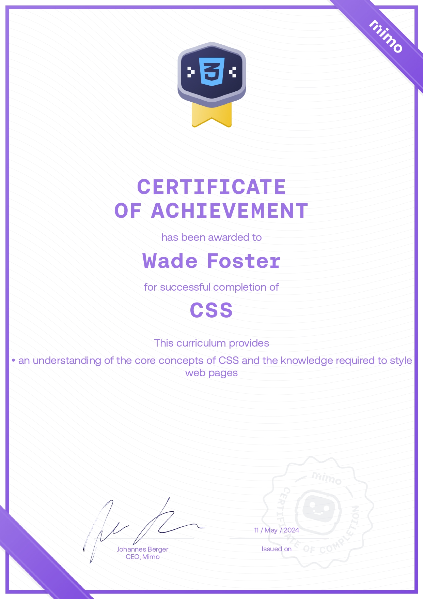

My name is Wade Foster, I'm a 33yo entreprenuer and aspiring freelance front end developer, based in Melbourne, Australia.
At the moment you'll find me learning to code in my spare time, skateboarding, reading, tending to my plants, walking in the park or enjoying the view from my balcony on the 21st floor of my inner-city apartment.
More about me
I believe the greatest travesty of our time is unfulfilled creativity that is lost to us. Rest in peace to the ideas that never reached fruition 🪦
I'm someone who has been described as a life-long learner and find a lot of satisfaction in the acquisition of new skillsets. Some of these skillsets include: automotive mechanics, writing/recording/producing music, networking and digital art.
I have experience working with the following programs: VS Code, Photoshop, Godot (game design) and Reason (music production).
Some of my personal achievements: Paid off my mortgage in 7yrs, Received national radio play on Triple J, Established a company wherein I worked closely with 5 business partners who collectively grew the company to 15 people total.
Certificates - Learning To Code
  Contact Me!